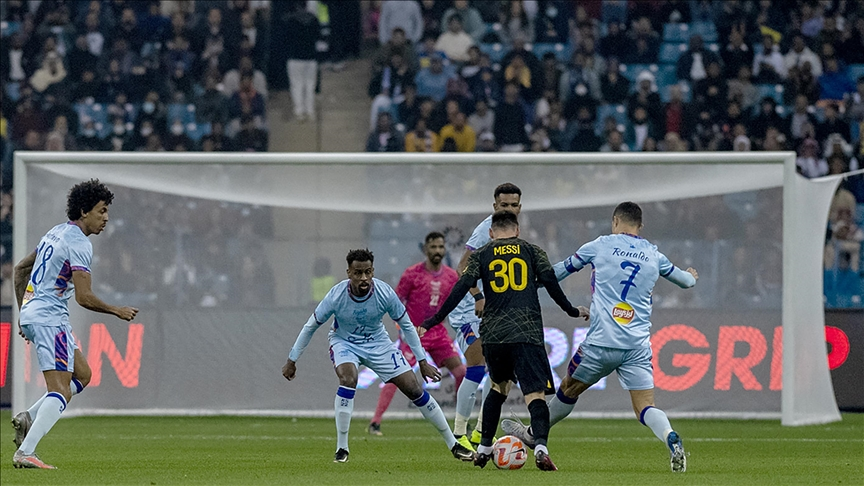

End of an era? Messi & Ronaldo trade goals in late-career clash as PSG win high-scoring friendly over Riyadh All-Star XI.
The long awaited friendly match between Messi and Ronaldo ended with a drammatic game full of goals, where 9 goals were exchanged between the teams. Both Messi and Ronaldo were on the score sheet with other superstars like Mbappe and Ramos finding the back of net.